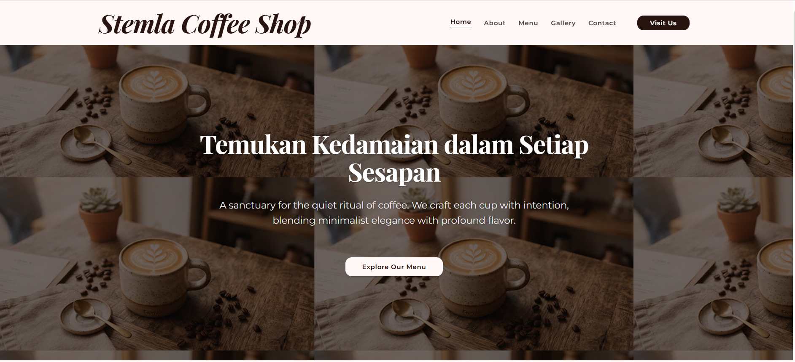
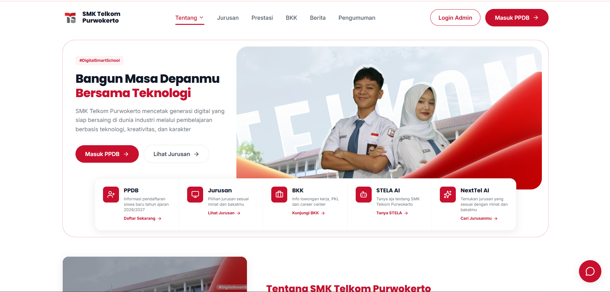

Hi, I'm Fakhri
|
A passionate student exploring web technology and graphic design, dedicated to building clean digital solutions and continuous learning.
CONNECT
PROFILE
About Me
Who Am I
I am a student with a strong passion for technology and digital development. I love exploring new things and combining technical logic with my hobby in graphic design to create works that are not only functional but also visually appealing. Outside of my studies, I am very active in sports, especially football, which is my way of staying fit while developing teamwork skills.
My Approach
As an active learner, I bring curiosity and discipline to every task or project I undertake. I always strive to balance technical understanding with design aesthetics. Inspired by the dynamics of football, I prioritize hard work, efficient strategy, perseverance when facing challenges (like bugs or new obstacles), and solid collaboration when working in a team.
Personal Details
NAME
Fakhri Bagas Widyatmko
LOCATION
Purwokerto, Indonesia
PHONE
+62 858 - 7833 - 5732
bagasf534@gmail.com
EDUCATION
SMK Telkom Purwokerto
STATUS
Student
MY JOURNEY
Education & Activities
2026
JHIC Web Development Competition
PARTICIPANT
Designed and developed a web project for the JHIC competition, sharpening coding execution, problem-solving, and time management skills under competition standards.
2025 — Present
Active Scout Member (Pramuka)
SMK TELKOM PURWOKERTO
Actively involved in scout organizational events, honing leadership qualities, discipline, adaptability, and strong teamwork.
2025 — Present
Vocational High School Student
SMK TELKOM PURWOKERTO
Studying software engineering fundamentals, web development, and graphic design to build a solid technical foundation.
SKILLS & TOOLS
My Tech Stack
Frontend Languages & Frameworks
Technologies and frameworks I use to build modern, responsive, and interactive user interfaces.
Backend Core
Server-side technologies, databases, and API architectures I use to power robust web applications.
PORTFOLIO
Selected Works

Trashure
A waste management web platform designed to facilitate eco-friendly practices and recycling activities. As the Full-Stack Developer handling both frontend and backend, I developed the platform end-to-end using HTML, CSS, JavaScript, PHP, and MySQL. I built dynamic, responsive interfaces for seamless user interaction while engineering the server-side logic and database structures to handle data processing efficiently. The system focuses on intuitive user experience, smooth navigation, and reliable performance for tracking and managing waste recycling workflows.
VIEW DETAILS
Stemla Coffee Shop
A "Warm Minimalism"-themed landing page for a specialty coffee shop, built as a single-page website featuring signature menu highlights, a shop atmosphere gallery, and location details. As the Frontend Developer, I refactored an initial single-file prototype into a clean, modular codebase—separating markup, styling, and logic—while improving accessibility and adding real interactivity, including a fully functional mobile navigation menu that was missing from the original design. The focus was on clean code architecture, responsive layout, and a cohesive visual identity built around earthy tones and editorial typography.
VIEW DETAILS
SMK Telkom Redesign (JHIC)
A "Digital Smart School"-themed website designed for the JHIC 2026 competition, featuring student enrollment (PPDB), program details, career placement services (BKK), and AI capabilities (STELA AI & NextTel AI). As the UI/UX Designer, I handled user needs research, information architecture, and everything from wireframes to high-fidelity prototypes, while also establishing a design system (colors, typography, UI components) to guide the development team. The design focused on intuitive navigation, clear calls-to-action (CTAs) for enrollment, and a visual style that builds trust among prospective students.
VIEW DETAILSGET IN TOUCH
Contact Me
Send an Email directly.
bagasf534@gmail.com · +62 858 - 7833 - 5732